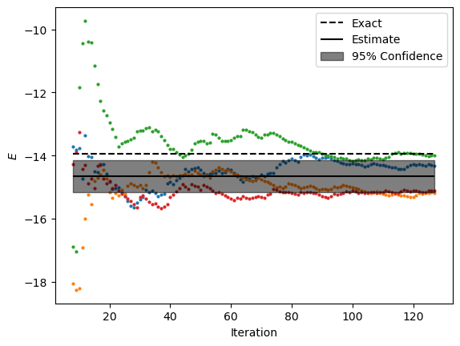

QC Loschmidt Echos - Hadamard Test
This example shows how to estimate the energy of Heisenberg model on 12-sites kagome lattice with periodic boundaries using cluster update with Boltzmann weights estimated from noisy Loschmidt echos with non-negative least squares method. The Loschmidt echos are estimated via Hadarmard test quantum circuits.
Script
import math
import os
import timeseries_qmc as ts
import numpy as np
import matplotlib.pylab as plt
from tenpy.models import lattice
from pytket.extensions.qiskit import AerBackend
experiment_dir = "./data/qc_loschmidt_hadamard"
log_filename = os.path.join(experiment_dir, "log")
ts.utils.configure_logging(log_filename, True)
##############################################################################
# Setup Model
##############################################################################
lattice = lattice.Kagome(2, 2, None, bc="periodic")
Jzz = -1
hx = 0.0
model = ts.models.HeisenbergXYZ.from_lattice(lattice, Jzz, Jzz, Jzz, hx)
##############################################################################
# Perform Monte Carlo Samping
##############################################################################
beta = 0.25
backend = AerBackend()
# Since Aer is noisless, specifying fidelity_estimator could be omitted (i.e. set as `None`)
fidelity_estimator = ts.mitigation.FidelityEstimator(1.0, 1.0)
n_shots = 1000
loschmidt_evaluator = ts.loschmidt.Hadamard(
model, backend, n_shots, experiment_dir, dt_trotter=0.125, fidelity_estimator=fidelity_estimator
)
boltzmann_calculator = ts.boltzmann.NNLS(model, beta, loschmidt_evaluator, t_max=0.5, n_t=8, discrepency_factor=2)
sampler = ts.sampling.KagomeClusterUpdate(Jzz, beta, lattice=lattice)
samples_num_per_chain = 128
chains_num = 4
initial_state = (model.n_qbits // 2) * [0, 1]
chains = []
for rng_seed in range(chains_num):
chain_filename = os.path.join(experiment_dir, "chain_" + str(rng_seed) + ".pickle")
chain = ts.sampling.generate_chain(
boltzmann_calculator, sampler, initial_state, rng_seed, samples_num_per_chain, chain_filename
)
chains.append(chain)
##############################################################################
# Estimation & Comparison with Exact Diagonalization Result
##############################################################################
_, exact, _ = model.calc_thermal_observables(beta)
num_burned_samples = 8
used_samples = list(range(num_burned_samples, samples_num_per_chain))
chains_estimates = []
fig = plt.figure()
for chain in chains:
values = chain.get_local_energies()[used_samples]
cum_means = np.cumsum(values) / np.arange(1, 1 + len(values))
plt.plot(used_samples, cum_means, "o", ms=2)
chain_estimate = np.mean(values)
chains_estimates.append(chain_estimate)
chains_estimates = np.array(chains_estimates)
estimate = np.mean(chains_estimates)
error = 2 * np.std(chains_estimates) / math.sqrt(chains_num) # Two standard deviations - 95% condfidence
plt.hlines(xmin=used_samples[0], xmax=used_samples[-1], y=exact, color="k", ls="--", label="Exact")
plt.hlines(xmin=used_samples[0], xmax=used_samples[-1], y=estimate, color="k", label="Estimate")
plt.fill_between(
used_samples, estimate - error, estimate + error, color="k", zorder=2, alpha=0.5, label="95% Confidence"
)
plt.ylabel("$E$")
plt.xlabel("Iteration")
plt.legend()
plt.savefig(os.path.join(experiment_dir, "output.png"), bbox_inches="tight")
plt.show()
Output
Note: Your output might be different due to the stastical nature of the algorithm.
